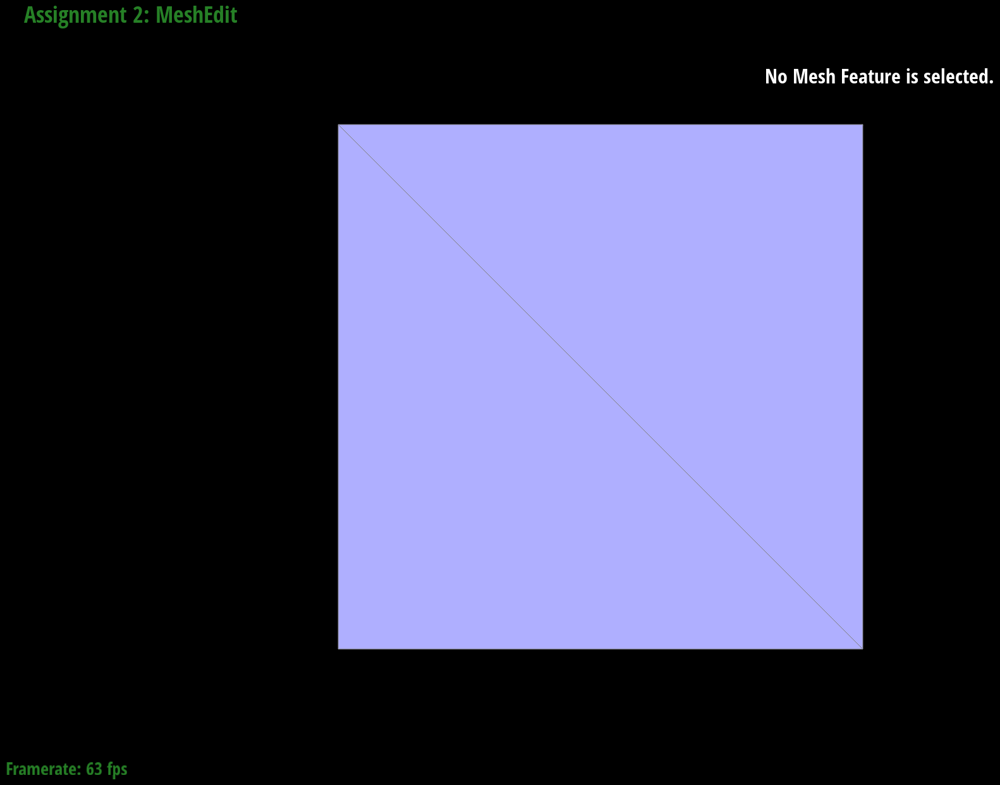
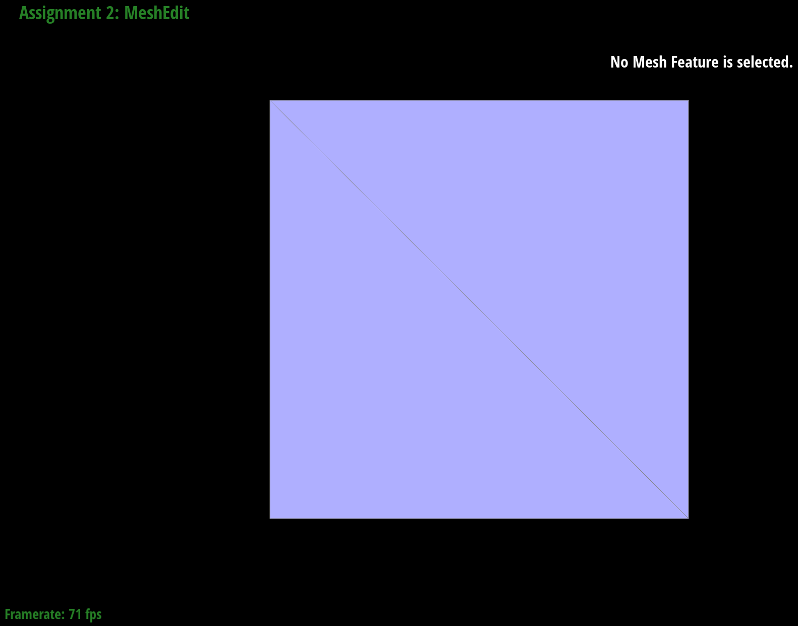
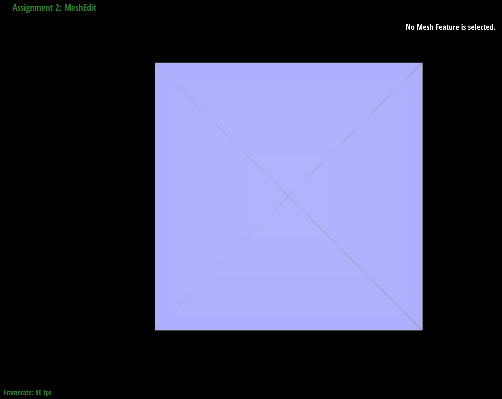
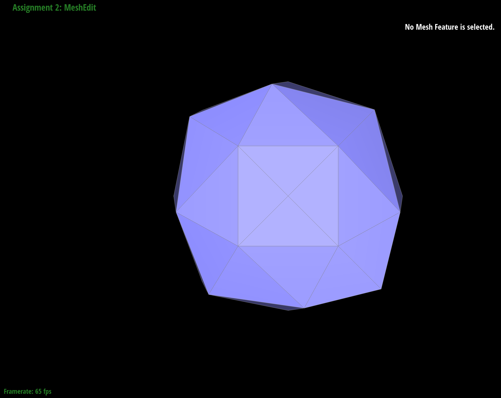
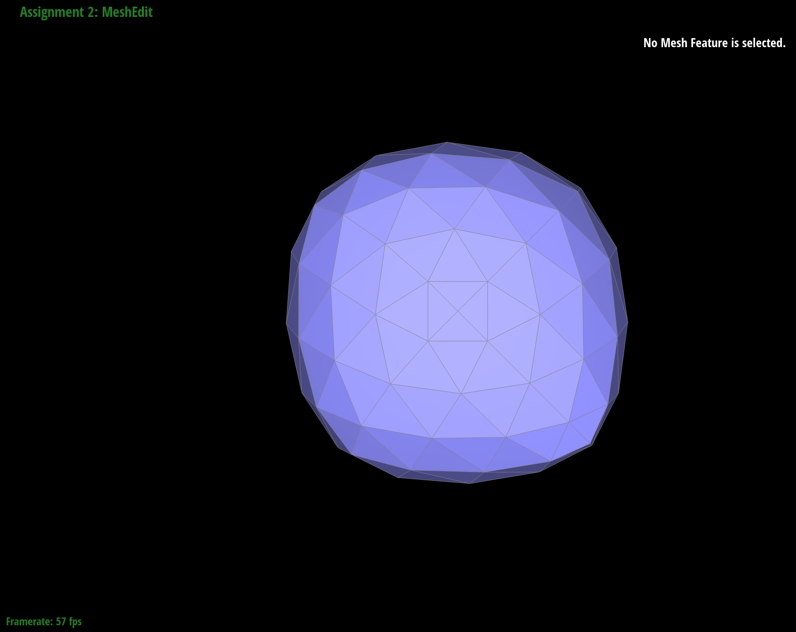
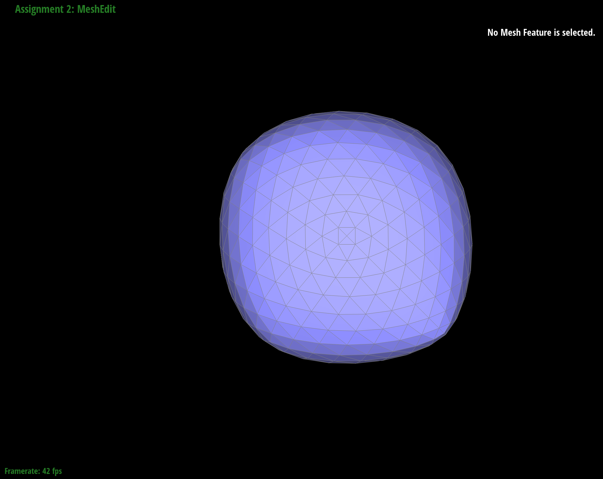
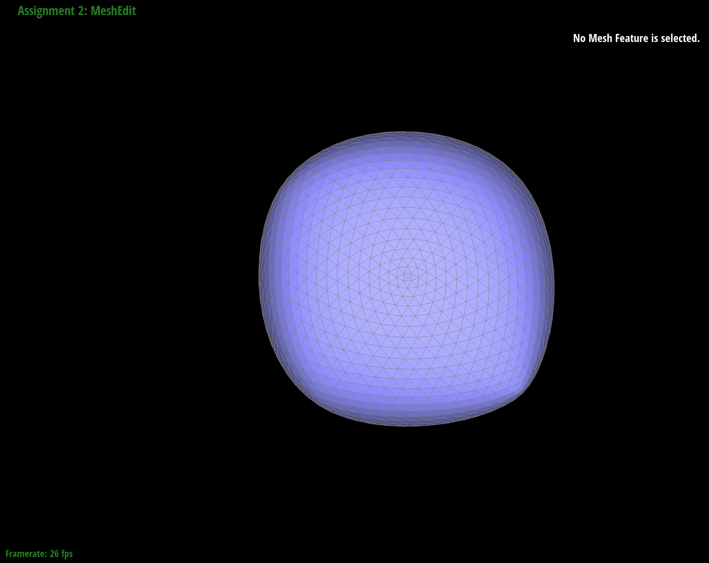
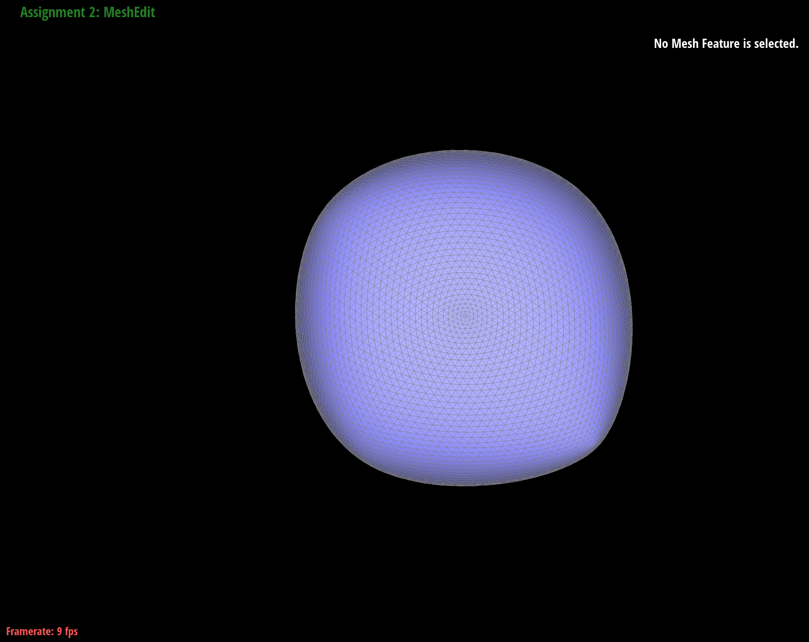

Webpage: https://cal-cs184-student.github.io/hw-webpages-sp24-diana-qing/hw2/index.html
Overview
In this homework, I used de Casteljau's algorithm to create Bezier curves and surfaces given a set of control points. I also used the half-edge data structure to traverse triangle meshes, which allowed me to (1) achieve flat and Phong shading for smooth surfaces and (2) implement edge flips and splits to ultimately upsample meshes using loop subdivision. Something interesting I learned from completing this assignment is how subdivision may not be symmetrical depending on what edges exist in the starting .dae file, but this asymmetry can potentially be addressed through splitting and flipping some edges before beginning subdivision. When creating Bezier curves, it was also interesting seeing how changing the location of one control point only affects the curve between this control point and the other points it's directly connected to, but doesn't affect the curves among the other control points.
Section I: Bezier Curves and Surfaces
Part 1: Bezier Curves with 1D de Casteljau Subdivision
Briefly explain de Casteljau's algorithm and how you implemented it in order to evaluate Bezier curves.Given n control points, de Casteljau's algorithm allows us to recursively use linear interpolation to find intermediate control points until there's only 1 point remaining, resulting in a smooth Bezier curve connecting this 1 final point to the leftmost and rightmost original control points. The algorithm also includes a parameter t, which is a value between 0 and 1, that controls where along a spline the intermediate control points that get calculated in each step lie.
Starting with n control points, de Casteljau's algorithm uses linear interpolation to find the n-1 intermediate control points. In the next step, it linearly interpolates these n-1 intermediate control points to find the next n-2 intermediate points. In BezierCurve::evaluateStep(), we only need to go through one step of de Casteljau's. Thus, I iterated through the n points passed into the function. On iteration i, where i is between 0 and points.size()-1 (inclusive), I linearly interpolated points p_i = points.at(i) and p_{i+1} = points.at(i+1) by computing lerp(p_i, p_{i+1}, t) = (1 - t) * p_i + t * p_{i+1}. This gave me the intermediate control point between p_i and p_{i+1}. I stored the lerp result in a 1D vector called intermediate_control_pts, then incremented i by 1, and repeated the process. At the end, I returned intermediate_control_pts from the function because it contains the n-1 intermediate control points.
Take a look at the provided .bzc files and create your own Bezier curve with 6 control points of your choosing. Use this Bezier curve for your screenshots below.
I created a new .bzc file, curve3.bzc, containing 6 control points:

Show screenshots of each step / level of the evaluation from the original control points down to the final evaluated point. Press E to step through. Toggle C to show the completed Bezier curve as well.
|
|
|
|
|
|

|
|
Show a screenshot of a slightly different Bezier curve by moving the original control points around and modifying the parameter \(t\) via mouse scrolling.
Using curve3.bzc, I obtained a slightly different Bezier curve by manually moving around the original control points and modifying t through scrolling my mouse up.

Part 2: Bezier Surfaces with Separable 1D de Casteljau
Briefly explain how de Casteljau algorithm extends to Bezier surfaces and how you implemented it in order to evaluate Bezier surfaces.de Casteljau's algorithm extends to Bezier surfaces because instead of only having 1 curve, we now have multiple curves (let's say n), each of which we perform de Casteljau's algorithm on to ultimately end up with 1 final point for each curve. Then we perform de Casteljau's again on these n final points to obtain the final interpolated point for the Bezier surface.
For each curve, the process of performing de Casteljau's is the same as in Part 1 (i.e. given n original control points, we keep recursively using linear interpolation to find intermediate control points until we end up with 1 final point). Thus, given n control points, each step of de Casteljau's algorithm consists of using linear interpolation to find the n-1 intermediate control points, which is what my BezierCurve::evaluateStep() function from Part 1 does. Thus, my code for BezierPatch::evaluateStep() is identical to my code in BezierCurve::evaluateStep(), except now each point is a Vector3D instead of a Vector2D.
BezierPatch::evaluate1D() will keep performing each step of de Casteljau's until the algorithm converges and finds the 1 final point. Thus, I used a while loop to keep calling BezierPatch::evaluateStep() until evaluateStep() returned only 1 point, which indicates that de Casteljau's converged. This 1 point is what evaluate1D returns. Each time evaluateStep() is called, I pass in the points that the previous call to evaluateStep() returned because these points represent the next intermediate control points that we want to linearly interpolate.
controlPoints is a 2D array of control points, where each row contains the control points for 1 curve. Thus, I iterate through each row of controlPoints and call BezierPatch::evaluate1D() on each row and the parameter u to find the 1 final point for each curve. I stored the final control points for each curve in a 1D vector called final_pt_for_all_curves. After obtaining the final point for each row of points in controlPoints, I call evaluate1D() one last time on the points in final_pt_for_all_curves and the parameter v to obtain the final interpolated point for the Bezier surface.
Show a screenshot of bez/teapot.bez (not .dae) evaluated by your implementation.
Section II: Triangle Meshes and Half-Edge Data Structure
Part 3: Area-Weighted Vertex Normals
Briefly explain how you implemented the area-weighted vertex normals.Starting with the halfedge h associated with this vertex (which I obtained by calling halfedge()), I iterated through every face that's incident to this vertex. For each non-boundary face, I obtained the positions of the 3 vertices that make up that face. Given some vertex h->vertex(), the other 2 vertices in the same triangle face can be obtained by calling h->next()->vertex() and h->next()->next()->vertex(). One I got the positions of the 3 vertices that make up a face, I computed the area of the triangle by multiplying the norm of the cross product of 2 edges of the triangle face with 1/2. I also obtained the normal for the face using h->face()->normal(). Then I computed the area weighted normal for the face by multiplying the normal and the area of the face, and added this result to areaWeightedNormalsTotal, a variable which represents the sum of area weighted normals for all faces incident to the vertex. Then I moved onto the next triangle face using the twin halfedge, and kept repeating this process while h != halfedge(). We can stop when h == halfedge() because this means we're back to where we started, so we know we've already iterated through every face incident to this vertex. At the end, I normalized areaWeightedNormalsTotal by calling unit(), and returned this result.
Show screenshots of dae/teapot.dae (not .bez) comparing teapot shading with and without vertex normals. Use Q to toggle default flat shading and Phong shading.


Part 4: Edge Flip
Briefly explain how you implemented the edge flip operation and describe any interesting implementation / debugging tricks you have used.I implemented edge flips by closely following the instructions in the spec. I began by listing every mesh element (vertex, edge, face, and half-edge) that exists before and after flipping and defined the mesh elements in relation to each another. Given that the input edge e0 is the edge being flipped, we can define each element based on it's relationship to e0's halfedges. Then I went through each mesh element and updated its pointers to reflect its relationship to other mesh elements after the flipping operation takes place. Flipping an edge doesn't create any new elements, so the majority of the work after flipping an edge was to update pointers. For halfedges, I updated pointers using setNeighbors() since it lets you easily specify the halfedge's next, twin, source vertex, edge, and face. For edges, vertices, and faces, I updated their halfedge pointers.
An implementation trick I used is drawing a detailed diagram labeling each mesh element that exists before and after flipping, which allowed me to keep track of exactly what updates needed to be made to the pointers of each mesh element. It also makes it clear what the relationship between mesh elements are (both before and after flipping), and I could directly translate these relationships into code, which was what the bulk of the coding for this task consisted of. From the diagram below, we can see that when we flip edge e0, the main changes that get made are (1) the orientation of faces f0 and f1 change, (2) edge e0 now connects vertices a and d instead of vertices b and c, and (3) the orientation of halfedges h0 and h3 is now horizontal instead of vertical because the edge they are associated with (e0) has changed to be horizontally oriented.
Show screenshots of the teapot before and after some edge flips.

|
|
|
|
|
Write about your eventful debugging journey, if you have experienced one.
I didn't experience an eventful debugging journey since I was able to get my edge flips to work on the first try by closely following the guidelines in the spec and drawing a detailed diagram labeling every mesh element before and after flipping so I knew exactly what updates had to made to the pointers of each mesh element. Essentially, I translated the relationships between mesh elements in my diagram into code, which prevented errors.
Part 5: Edge Split
Briefly explain how you implemented the edge split operation and describe any interesting implementation / debugging tricks you have used.Similar to Part 4, I implemented edge splits by closely following the instructions in the spec and drawing a detailed diagram where I labeled every mesh element (vertex, edge, face, and half-edge) that exists before and after splitting, which allowed me to keep track of exactly what updates needed to be made to each mesh element along with what new elements I need to create. Drawing this diagram was a helpful implementation and debugging trick because it clearly shows the relationship between every mesh element before and after splitting, and I could directly translate these relationships into code, which is what the coding for this task consisted of. Similar to Part 4, I updated pointers for halfedges using setNeighbors() since it lets us easily specify the halfedge's next, twin, source vertex, edge, and face. For edges, vertices, and faces, I updated their halfedge pointers.
From the diagram above, we can see that after splitting edge e0, which connects vertices b and c in the original mesh, new elements are created. Specifically, we create 1 new vertex (m), 3 new edges (e5, e6, e7), 2 new faces (f2 and f3), and 6 new half-edges (h10, h11, h12, h13, h14, h15).
Show screenshots of a mesh before and after some edge splits.
Here are screenshots of teapot.dae before and after some edge splits:

|

|
Show screenshots of a mesh before and after a combination of both edge splits and edge flips.
Here are screenshots of teapot.dae before any edge splits and flips, after some edge splits (but no edge flips), and after both edge splits and flips:


Write about your eventful debugging journey, if you have experienced one.
Similar to Part 4, I didn't experience an eventful debugging journey as I was able to get my edge splits working on the first try by closely following the instructions in the spec and drawing a detailed diagram showing what mesh elements exist before and after splitting, which allowed me to easily see how each mesh element should be updated and what new mesh elements I had to create. Essentially, I directly translated the relationships between mesh elements in my diagram into code, which prevented errors.
If you have implemented support for boundary edges, show screenshots of your implementation properly handling split operations on boundary edges.
I split boundary edges similarly to how I split non-boundary edges. I drew a diagram labeling every mesh element that exists before and after splitting a boundary edge, allowing me to see how each element should be updated after splitting and what new elements needed to be created. Instead of turning 2 faces into 4 faces, we just turn 1 face into 2 faces when splitting boundary edges. Thus, the new elements created from splitting a boundary edge are: 1 new vertex (m), 2 new edges (e3 and e4), 1 new face (f1), and 4 new half-edges (h6, h7, h8, h9).

Before splitting, for the half-edges associated with the boundary edge (h0 and h1), it's also important to indicate which halfedge is inside the triangle face versus which is in the boundary face. For the edge e0 passed into HalfedgeMesh::splitEdge(), I check if e0->halfedge is in the boundary. If it's not, I set halfedge h0 to be e0->halfedge->twin since I always want h0 to be the halfedge associated with the boundary edge that's in the boundary as that's how it's labeled in my diagram. Then I can set all the other mesh elements based on h0.
Below are images of beetle.dae before any boundary edge splits and after splitting some boundary edges (and also some non-boundary edges to ensure that splitting both boundary and non-boundary edges in the same .dae file work).


Part 6: Loop Subdivision for Mesh Upsampling
Briefly explain how you implemented the loop subdivision and describe any interesting implementation / debugging tricks you have used.I implemented loop subdivision by exactly following the 5 steps given in the spec.
Step 1: I iterated through each vertex in the input mesh to compute its new position. For some vertex v, it's new position is equal to (1 - n * u) * v->position + u * original_neighbor_position_sum. n is the vertex's degree, which can be found by calling v->degree(). u represents a weight whose value can be obtained based on the value of n. If n=3, u=3/16. Otherwise, u=3/(8n). v->position refers to the position of v in the input mesh, NOT the new position. original_neighbor_position_sum represents the sum of the positions of v's neighboring vertices in the input mesh, NOT the new positions. I defined a helper function, sumOfNeighborsOriginalPositions(), to help me calculate this sum. Given a vertex u, this helper function will use halfedges and twins to visit all neighboring vertices of u in the mesh, allowing me to sum the original positions of all neighboring vertices. The algorithm for visiting neighboring vertices of a vertex is similar to how it was done in the printNeighbourPositions() function that was given in the spec. For each vertex, I also made sure to set its isNew flag to false to clearly indicate that it's part of the original mesh and not a newly created vertex.
Step 2: I iterated through every edge in the input mesh and computed the new position of a new vertex that gets created when we split an edge, and stored this new position in Edge::newPosition. The new position can be found by calculating (3.0 / 8.0) * (A + B) + (1.0 / 8.0) * (C + D), where A, B, C, and D represent positions of the vertices in the diagram given in the spec. For each edge, I also set its isNew flag to false to indicate that it's part of the original mesh and not a newly created edge.
Step 3: I iterated through every edge in the mesh and split the edge only if it's an edge in the input mesh and NOT a newly created edge. To check if an edge was originally in the input mesh, I checked if the 2 vertices that define the edge both have their isNew flags set to false. This check is important because without it, this step can result in an infinite loop because it keeps splitting all the newly created edges, which results in infinite splitting. Edges are split by calling splitEdge(), which was implemented in Part 5. A new vertex is created as a result of splitting the edge, and this vertex's newPosition is set to the edge's newPosition (which we calculated in step 2). In splitEdge(), I also made sure to set the isNew flag for this newly created vertex to true.
Step 4: I iterated through every edge in the mesh and flipped new blue edges that connect an old and new vertex by calling flipEdge() on the edge, which we implemented in Part 4. This check consists of (1) checking that the edge's isNew flag is true and (2) for the 2 vertices associated with that edge, checking that the isNew flag for one of these vertices is true while the isNew flag for the other is false. If both these conditions are met, then we flip the edge. This distinction between new BLUE versus new BLACK edges is important because we only want to flip new BLUE edges. Thus, in splitEdge(), I only set the isNew flag for new BLUE edges to be true. The new black edge that's created by splitting an original black edge into 2 still has its isNew set to false.
Step 5: I iterated through all vertices (old and new) in the mesh and set v->position to be v->newPosition.
After implementing all 5 steps of Part 6, my upsampling wasn't working because there was an infinite loop, and I had difficulty isolating which step the infinite loop was caused by because every step involves looping over mesh elements. Thus, one debugging trick I used was commenting out my code for different steps and seeing if the infinite loop still existed when I tried to upsample. For example, I commented out my code for steps 4 and 5, and found that the infinite loop was still present, which helped me realize my problem came from step 3. My problem was that I was splitting all edges when I should've only been splitting edges that were in the original input mesh, and not splitting new edges (since splitting new edges will result in infinite splitting). After fixing this, the infinite looping was resolved.
Take some notes, as well as some screenshots, of your observations on how meshes behave after loop subdivision. What happens to sharp corners and edges? Can you reduce this effect by pre-splitting some edges?
Without pre-splitting: As we continue performing loop subdivision on the cube, the sharp corners and edges of the cube get more rounded out and smoothed. This is because every loop subdivision results in more triangles, which can result in a smoother mesh This effect can be reduced by pre-splitting some edges.
Below are the results of loop subdivision on cube.dae without pre-splitting any edges:
|

|

|
|
|

|
|
|

|
Load dae/cube.dae. Perform several iterations of loop subdivision on the cube. Notice that the cube becomes slightly asymmetric after repeated subdivisions. Can you pre-process the cube with edge flips and splits so that the cube subdivides symmetrically? Document these effects and explain why they occur. Also explain how your pre-processing helps alleviate the effects.
Below are results of splitting the diagonal edge in cube.dae before beginning loop subdivision. Pre-processing the cube by splitting this diagonal edge can help the cube subdivide more symmetrically because it makes the face of the cube more symmetrical.
|

|

|
|

|

|
|

|

|
|

|
If you have implemented any extra credit extensions, explain what you did and document how they work with screenshots.
YOUR RESPONSE GOES HERE
Part 7 (Optional, Possible Extra Credit)
Save your best polygon mesh as partsevenmodel.dae in your docs folder and show us a screenshot of the mesh in your write-up.YOUR RESPONSE GOES HERE
Include a series of screenshots showing your original mesh and your mesh after one and two rounds of subdivision. If you have used custom shaders, include screenshots of your mesh with those shaders applied as well.
YOUR RESPONSE GOES HERE
Describe what you have done to enhance your mesh beyond the simple humanoid mesh described in the tutorial.
YOUR RESPONSE GOES HERE